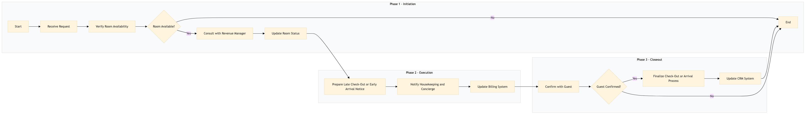

| Role | Steps |
|---|---|
| Front Desk Agent | 1.1 1.2 2.1 2.2 2.3 3.1 3.2 |
| Revenue Manager | 1.3 2.4 3.3 |
| Step | Name | Role | System | Input | Output | KPI | Dec? | Exc? | Pain Point / Risk |
|---|---|---|---|---|---|---|---|---|---|
| 1.1 | Receive Request | Front Desk Agent | Oracle OPERA Cloud | Guest request form or verbal communication | Request logged in Oracle OPERA Cloud | Less than 2 minutes | N | Y | Handling unexpected requests during peak hours. |
| 1.2 | Verify Room Availability | Front Desk Agent | Oracle OPERA Cloud | Room availability data | Availability report | Less than 1 minute | Y | N | Checking room status in real-time during high occupancy. |
| 1.3 | Consult with Revenue Manager | Revenue Manager | Oracle OPERA Cloud, IDeaS G3 RMS | Room availability report | Approval or alternative room suggestion | Less than 5 minutes | N | Y | Balancing guest needs with revenue targets. |
| 2.1 | Update Room Status | Front Desk Agent | Oracle OPERA Cloud | Approval or alternative room suggestion | Updated room status in Oracle OPERA Cloud | Less than 2 minutes | N | Y | Ensuring accurate room status updates. |
| 2.2 | Prepare Late Check-Out or Early Arrival Notice | Front Desk Agent | Oracle OPERA Cloud, Book4Time | Updated room status and guest details | Notice to housekeeping and concierge | Less than 3 minutes | N | Y | Coordinating with multiple departments efficiently. |
| 2.3 | Notify Housekeeping and Concierge | Front Desk Agent | Oracle OPERA Cloud, Book4Time | Late check-out or early arrival notice | Acknowledgment from housekeeping and concierge | Less than 1 minute | N | Y | Ensuring timely communication with support staff. |
| 2.4 | Update Billing System | Revenue Manager | Oracle OPERA Cloud, IDeaS G3 RMS | Late check-out or early arrival details | Updated billing record | Less than 5 minutes | N | Y | Accurate and timely billing updates. |
| 3.1 | Confirm with Guest | Front Desk Agent | Oracle OPERA Cloud, Book4Time | Updated room status and billing details | Guest confirmation | Less than 2 minutes | Y | N | Handling guest inquiries and concerns. |
| 3.2 | Finalize Check-Out or Arrival Process | Front Desk Agent | Oracle OPERA Cloud, Book4Time | Guest confirmation | Completed check-out or arrival record | Less than 3 minutes | N | Y | Closing out the process without errors. |
| 3.3 | Update CRM System | Revenue Manager | Marriott Bonvoy CRM, Oracle OPERA Cloud | Guest satisfaction feedback | Updated guest profile in CRM | Less than 5 minutes | N | Y | Capturing and updating guest data accurately. |
Manage late check-outs and early arrivals efficiently to ensure guest satisfaction and optimize hotel operations.